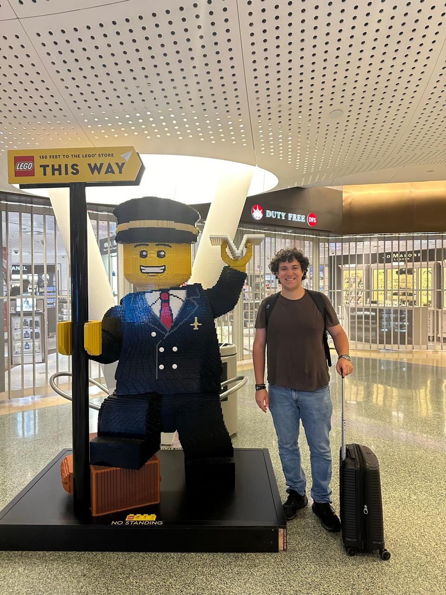
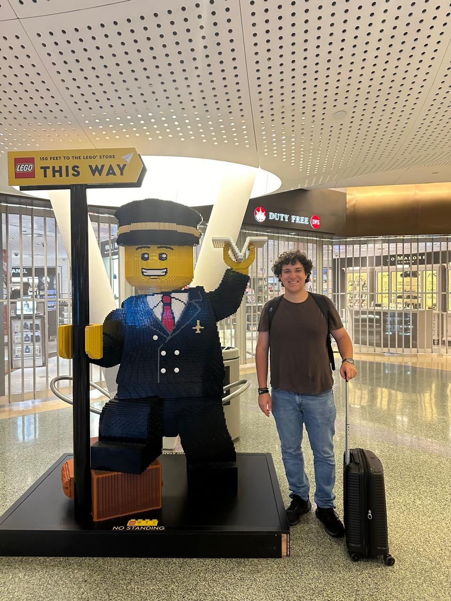

Reading

I have always been captivated by the stories and knowledge books offer. Reading is not just a pastime for me—it’s a way to learn, grow, and discover new perspectives about the world. Whether it’s fiction or non-fiction, each book offers a unique journey.
 
